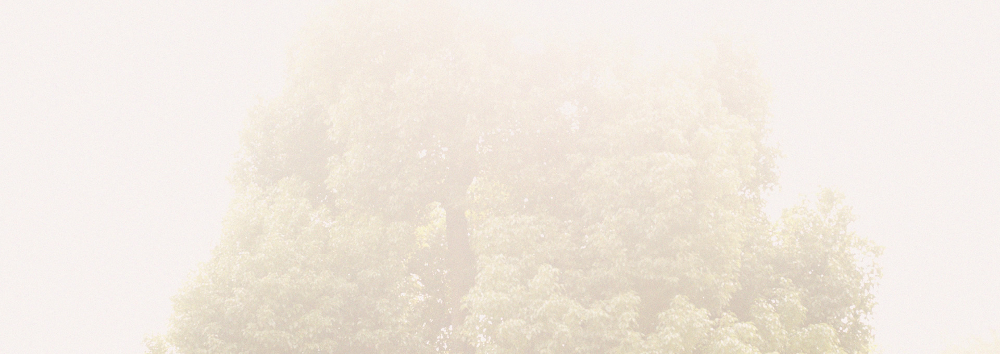

Accessories that enhance your life.
だれもが幸せな気持ちになれるアクセサリーを。
花嫁さまをさりげなく個性的に、女性らしく演出するブライダルアクセサリー。パーティや普段のスタイルのアクセントとしてお使いいただけるアイテムも展開しています。
「自分のイメージに合うアクセサリーが見つからない」と相談を受ける機会がいままで多くありました。様々な結婚式のスタイルが増えている中、自分らしいブライダルアクセサリーをお探しの花嫁さまに満足のいくコーディネートのご提案をしたい。そんな想いからAsaka Bridal Accessoriesをはじめました。
おふたりの新しい人生が幸せな日々に包まれますように。一点一点、心を込めてお作りしています。

Asaka Bridal Accessoriesのアクセサリーは、一部フェアトレードのパーツを使用しています。フェアトレードとは発展途上国でつくられた物を適正な価格で取引することで、現地の人たちの自立を支援する取り組みです。使用しているネームプレートはすべてTammy's Treatsのご協力のもと、カンボジアで製作されています。
Profile
Asaka Koyama
小山アサカ
1981年岐阜県出身。デザイン専門学校を卒業後、京都にてアクセサリー製作を始める。パリにてコレクションブランドのインターンシップを経験。帰国後、東京にて数社のアクセサリー、ジュエリー会社に勤務する。2014年 Asaka Bridal Accessoriesを立ち上げる。